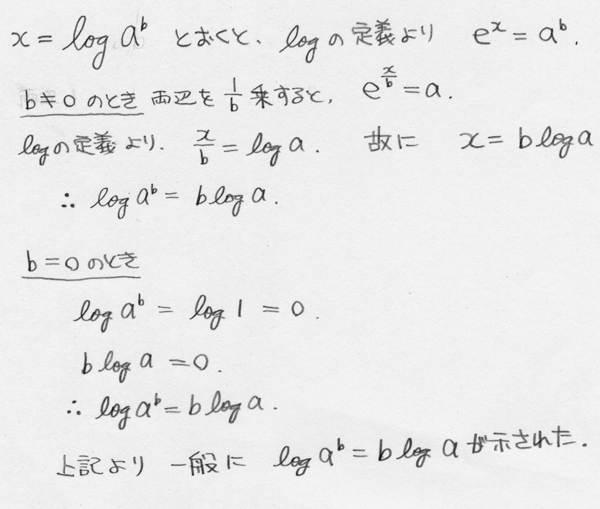

数学思考能力試験解答
３ （30点満点）
問１） （配点10点）
aが0でない場合、x=｛-b±（b^2-4ac）^(1/2)｝／2a （2次方程式の解の公式）
aが0の場合、x=-c/b
a=b=0の場合は、方程式にならないから題意を満たさない。 （完解で10点）
問２） （配点10点）

（完解で10点）
問３）
ｎ角形の任意の頂点からは、自分自身と隣り合う２頂点を除いた全ての頂点に対して対角線が引ける。
その本数はｎ-3本。
頂点はｎ個あるが、1本の対角線を2回ずつ数える分を除き、頂点の数は
n(n-3)/2 = n^2/2-3n/2
と導ける。 （完解で10点）